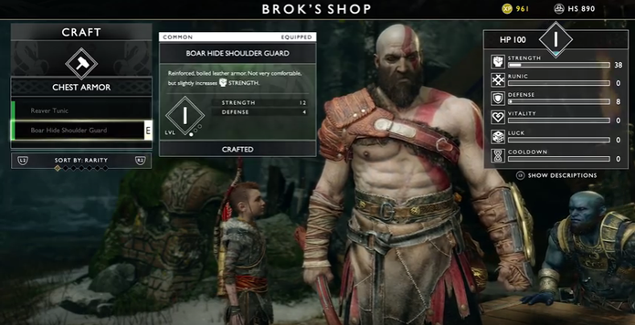

Sistema de evolução com elementos de RPG
Umas das grandes novidades do novo God of War é o seu sistema de evolução. O game traz alguns elementos similares a um RPG convencional, mas que não fazem com que ele perca suas origens. Em outras palavras, há um interessante sistema de troca de pontos de experiências por habilidades. Entretanto, eles são recebidos de uma forma limitada, não permitindo, por exemplo, que Kratos procure inimigos pelo cenário apenas para acumular pontos e adquirir movimentos.

O leque de ataques é extenso e variado para cada tipo de arma. Se nos outros títulos o progresso natural fazia com que Kratos adquirisse todas as habilidades disponíveis no jogo, no novo God of War é preciso escolher, pois dificilmente você conseguirá ter todos movimentos.